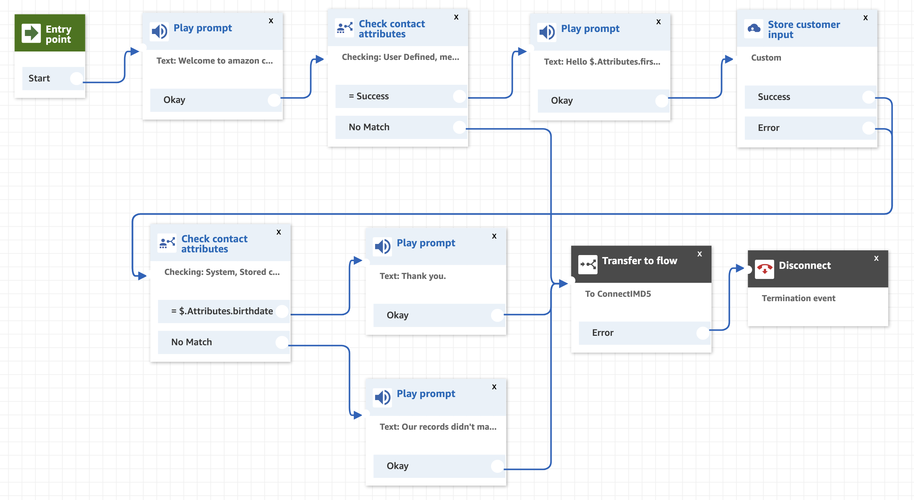
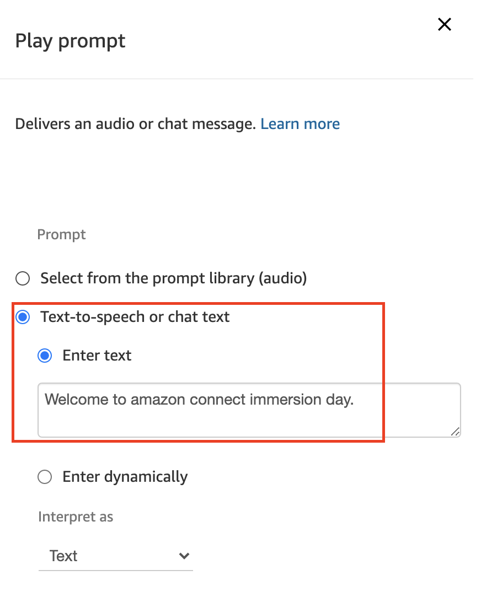
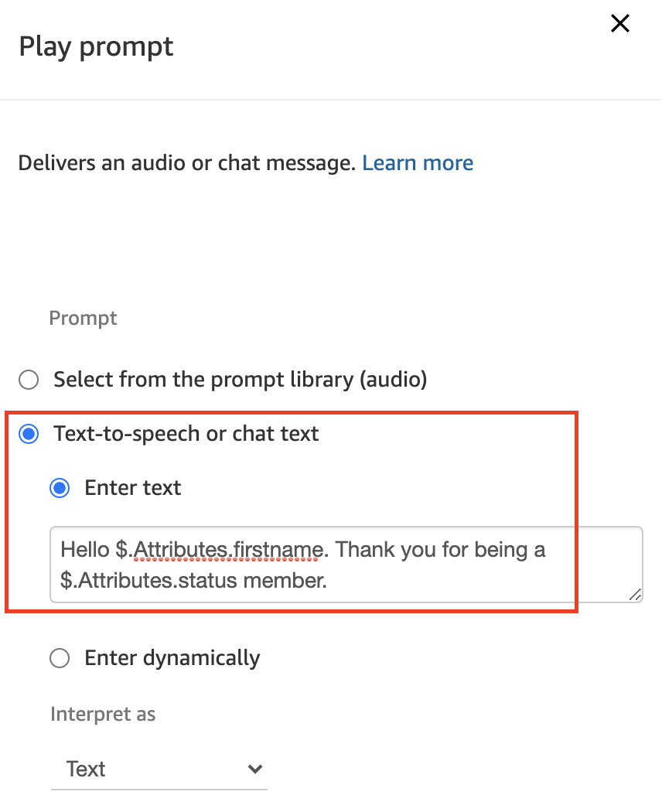
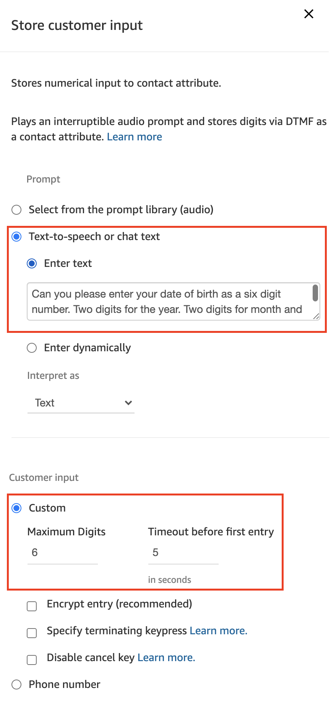
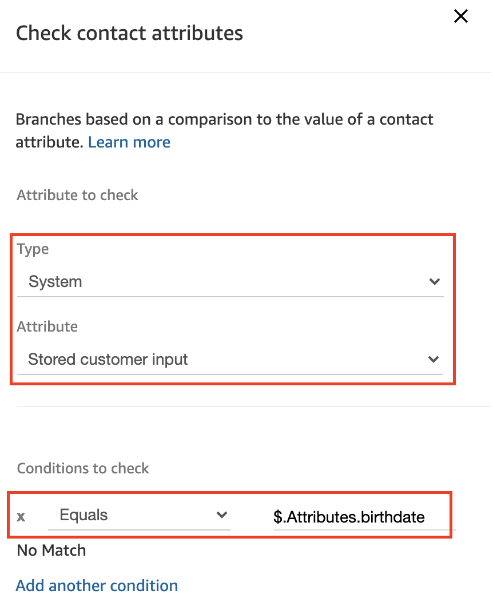
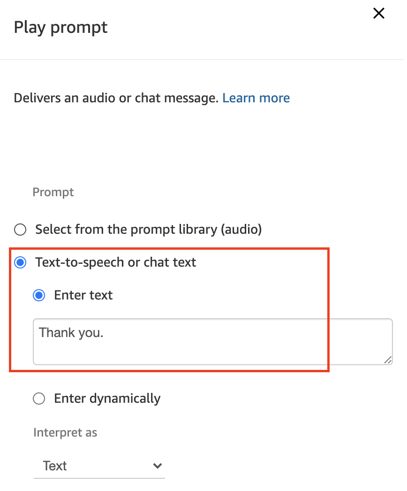
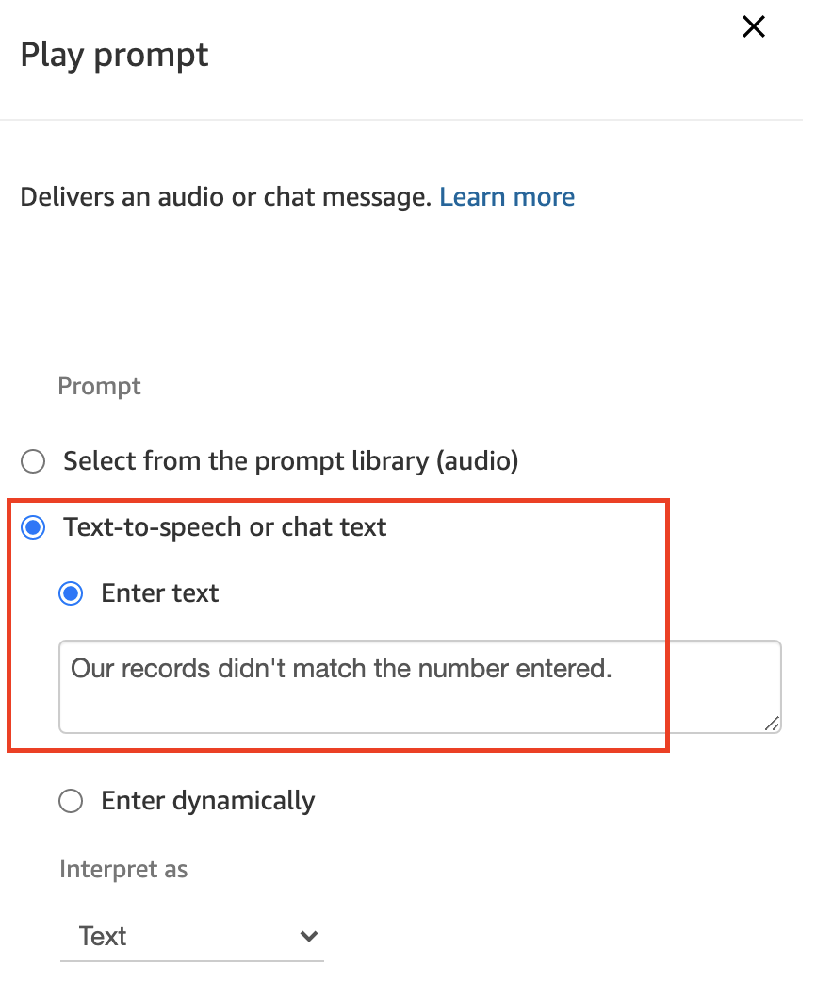
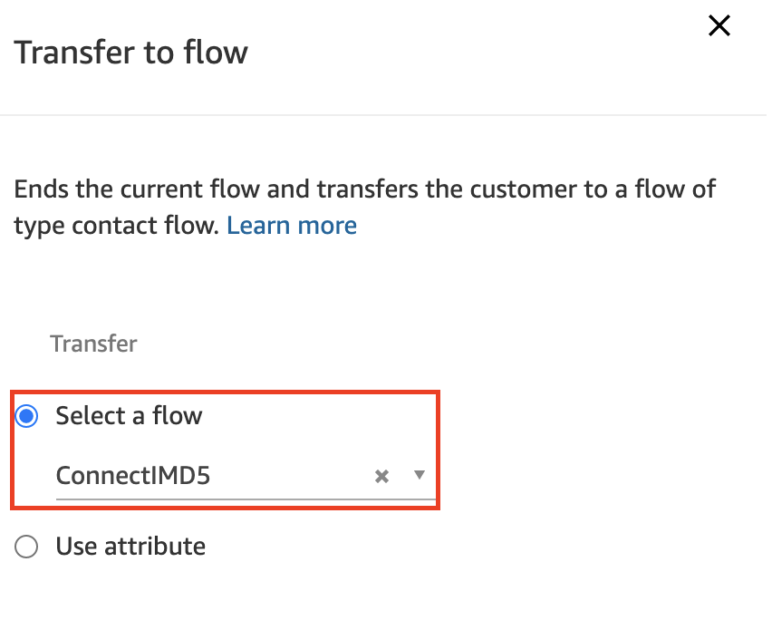

5. Welcome 메시지
이전에 저장한 고객 정보를 이용하여, 생년월일을 이용하여 고객 인증을 하고 인증된 경우 Welcome 메시지로 멘트하는 시나리오를 구성합니다.
-
Contact Flows 메뉴에서 ConnectIMD5 를 선택하여 다음과 같이 편집합니다. 
-
Play prompt Command Block 을 왼쪽 리스트 중 Interact 메뉴에서 Drag&Drop 으로 편집 화면으로 가져옵니다. 아래 Text 를 복사해서 입력합니다. Save 버튼을 클릭하여 설정을 저장합니다.
Welcome to amazon connect immersion day.
-
Check contact attributes Command Block 을 왼쪽 리스트 중 Branch 메뉴에서 Drag&Drop 으로 편집 화면으로 가져옵니다. 위에서 새로 만든 업무 시간을 선택하여 설정합니다. Save 버튼을 클릭하여 설정을 저장합니다. 이전 장에서 저장했던 Lambda 함수의 호출 결과를 확인합니다. message 변수는 Lambda 함수에서 인입 전화의 전화번호를 Key 로 DynamoDB에 고객 정보를 가져온 경우 Success 를 리턴하며, 고객 정보가 없어 가져오지 못한 경우 Fail 을 리턴합니다. 여기에서는 고객 정보 DB에 현재 인입 전화의 고객 전화 번호에 해당하는 고객 정보를 가져왔는지 확인하는 과정입니다.

-
Play prompt Command Block 을 왼쪽 리스트 중 Interact 메뉴에서 Drag&Drop 으로 편집 화면으로 가져옵니다. 아래 Text 를 복사해서 입력합니다. Save 버튼을 클릭하여 설정을 저장합니다.
Hello $.Attributes.firstname. Thank you for being a $.Attributes.status member.
$.Attributes.[Attribute 이름] 과 같은 형태로 Contact Flow 내에서 Set contact attributes Command Block을 이용하여 저장한 Attribute 들을 Contact Flow 내에서 참조하여 사용할 수 있습니다. 위에서는 Lambda 로 가져온 고객 정보들 중 firstname, status 항목을 참조하여 Play prompt Command Block 을 이용해서 동적으로 멘트를 재생해줍니다.
-
Store customer input Command Block 을 왼쪽 리스트 중 Interact 메뉴에서 Drag&Drop 으로 편집 화면으로 가져옵니다. 아래 Text 를 복사해서 입력합니다. Customer input 항목은 생년월일을 저장할 수 있도록 6자로 지정합니다. Timeout 은 적당히 5초 정도로 지정합니다. Save 버튼을 클릭하여 설정을 저장합니다. 이 항목에서는 인증을 위해 고객에게 생년월일을 DTMF로 입력하도록 요청합니다.
Can you please enter your date of birth as a six digit number. Two digits for the year. Two digits for month and two digits for the day.
-
Check contact attributes Command Block 을 왼쪽 리스트 중 Branch 메뉴에서 Drag&Drop 으로 편집 화면으로 가져옵니다. 아래 화면과 동일하게 Type, Attribute를 설정하고, Lambda 함수를 통해 가져온 birthdate attribute 와 동일한지 체크하도록 합니다. Save 버튼을 클릭하여 설정을 저장합니다. 
-
Play prompt Command Block 을 왼쪽 리스트 중 Interact 메뉴에서 Drag&Drop 으로 편집 화면으로 가져옵니다. 아래 Text 를 복사해서 입력합니다. Save 버튼을 클릭하여 설정을 저장합니다. 생년월일을 정확히 입력한 경우 인증된 사용자로 간주하고 아래 메시지를 멘트로 출력합니다.
Thank you.
-
Play prompt Command Block 을 왼쪽 리스트 중 Interact 메뉴에서 Drag&Drop 으로 편집 화면으로 가져옵니다. 아래 Text 를 복사해서 입력합니다. Save 버튼을 클릭하여 설정을 저장합니다. 고객이 입력한 생년월일과 고객정보 DB의 데이터가 일치하지 않을 경우 아래 메시지를 멘트로 출력합니다.
Our records didn't match the number entered.
-
Transfer to flow Command Block 을 왼쪽 리스트 중 Terminate / Transfer 메뉴에서 Drag&Drop 으로 편집 화면으로 가져옵니다. ConnectIMD5 로 설정합니다. Save 버튼을 클릭하여 설정을 저장합니다.

-
모든 연결이 제대로 설정되었는지 확인하고, Save 버튼을 클릭하여 저장하고, Publish 버튼을 클릭하여 발행 합니다.
고객의 전화번호를 통해 고객을 식별하고 DB에 저장된 고객 정보를 활용해서 인증하는 시나리오를 구축했습니다. 다음 장에서는 지금까지 구축한 시나리오를 바탕으로 실제 전화를 걸어 테스트를 해봅니다.